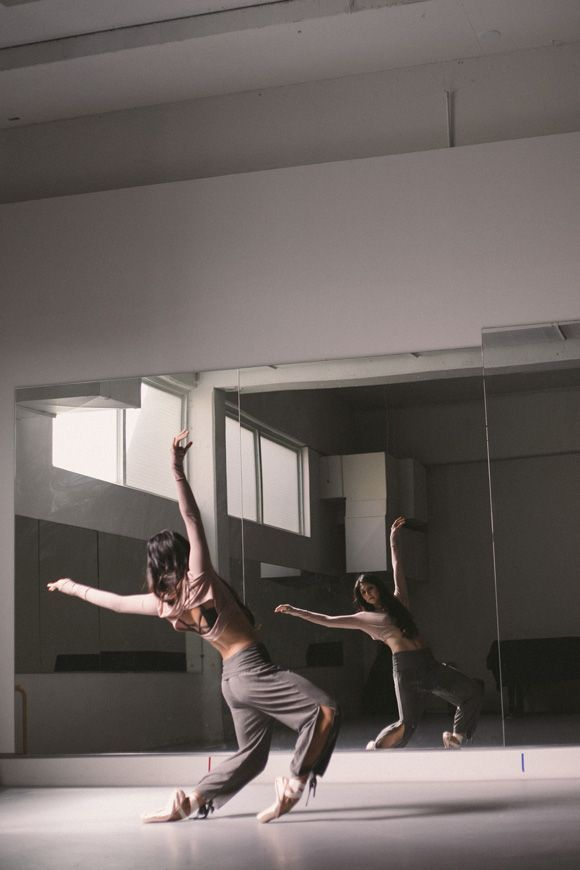

HIP HOP
Hip Hop é uma cultura popular que surgiu entre as comunidades afro-americanas do subúrbio de Nova York na década de 1970. A música é a principal manifestação artística do hip hop, que também tem na dança e no grafite forte representação.
CONTEMPORÂNEA
Dança contemporânea é um gênero de dança teatral que se desenvolveu em meados do século XX e, desde então, tornou-se um dos gêneros mais conhecidos, especialmente no mundo ocidental.
BALLET

Ballet é uma forma de dança realizada para o público de teatro. Como outras formas de dança, ballet podem contar uma história, expressar um estado de espírito, ou simplesmente refletir a música.
Mas a técnica de um dançarino de Ballet (modo de desempenho) e habilidades especiais são muito diferentes dos de outras dançarinas. Bailarinos executar muitos movimentos que não são naturais para o corpo.